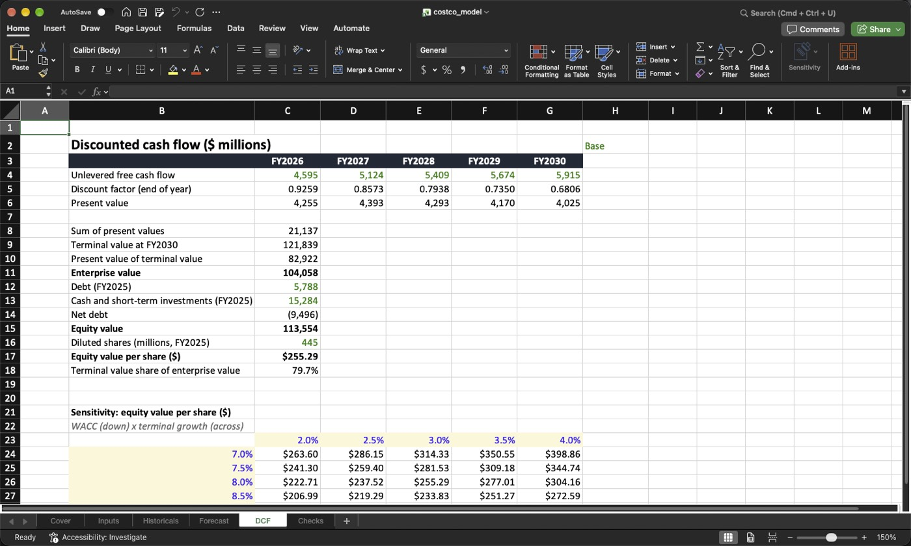
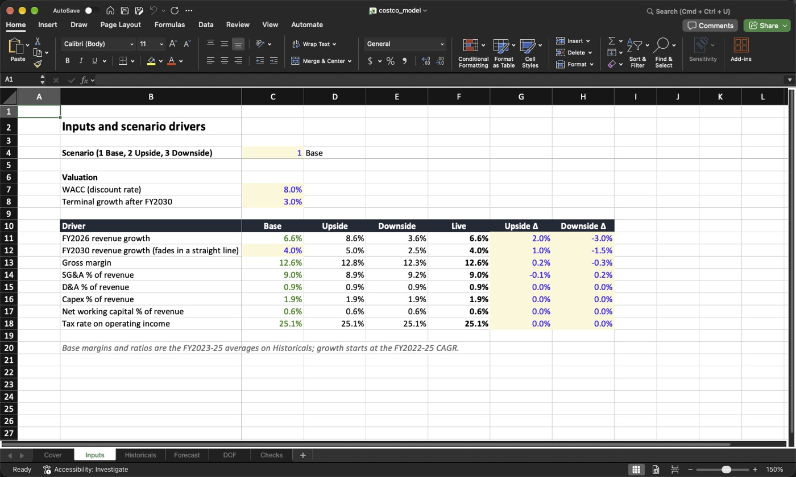
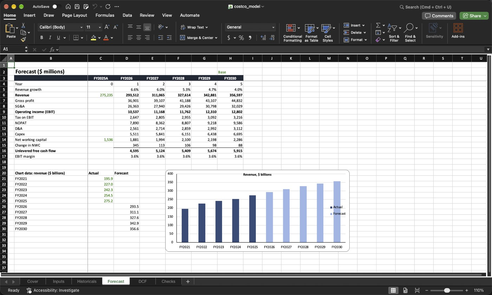
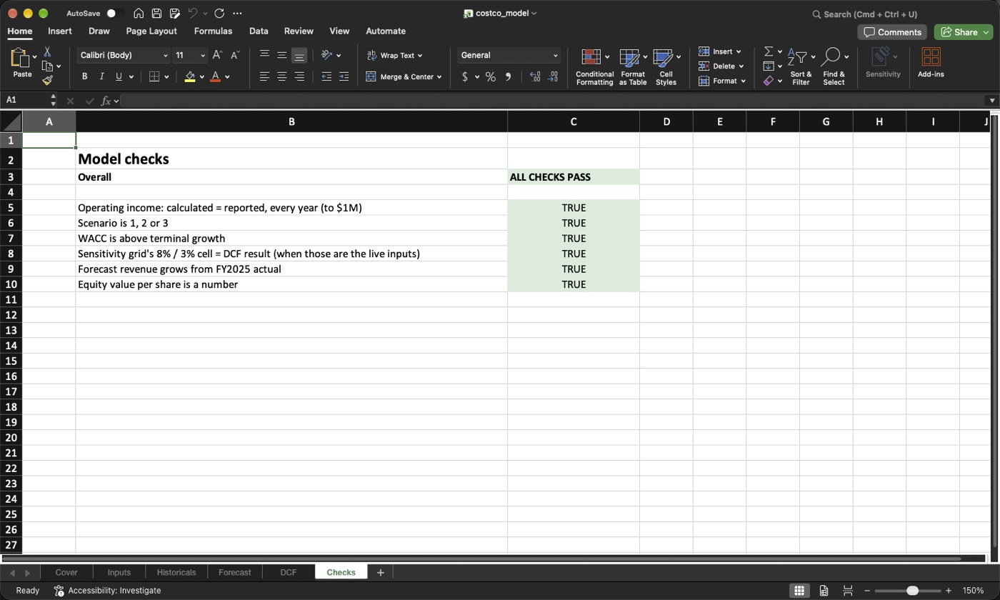

Excel · Financial modelling · 2026-10
Costco Model in Excel
A driver-based forecast and DCF built from Costco's SEC filings: a real Excel workbook with 231 live formulas, three scenarios, a sensitivity grid and a sheet that checks itself.

A modelling exercise, not investment advice: the model takes no buy/sell view and isn't compared with the share price. WACC and terminal growth are round illustrative inputs.
01 — The problem
Excel is still where most financial analysis happens, and a model is only as good as how it is built. Good models keep inputs separate from formulas, have no numbers typed into formula cells, flip between scenarios, and check themselves. Can a forecast and valuation of a real company be built to that standard, straight from its filings, and proven to calculate correctly?
02 — What I built
A six-sheet workbook for Costco Wholesale:
- Inputs: a scenario switch (Base / Upside / Downside, with data validation), WACC, terminal growth, and drivers per scenario. Base drivers are formulas pointing at history; upside and downside are separate delta inputs.
- Historicals: FY2021–FY2025 straight from the SEC's XBRL data, with ratios and 3-year averages.
- Forecast: FY2026–FY2030 revenue, margins, NOPAT and unlevered free cash flow, plus a chart.
- DCF: enterprise value, equity value per share, and a 5 × 5 WACC × growth grid.
- Checks: six self-checks that turn green or red.
It's built in Python with openpyxl, so it can be rebuilt from scratch, and checked three ways, the last in Excel itself.
03 — How it was built
- 01
Pull five years of filings
The SEC publishes every company's reported numbers as structured XBRL data. A short script reads Costco's 18 line items for fiscal 2021–2025: revenue, cost of goods, SG&A, taxes, D&A, capex, cash, debt and working capital. Where a number was restated, the latest filing wins. Revenue minus cost of goods minus SG&A equals reported operating income in every year, and the workbook checks that too.
- 02
Build the workbook to modelling standards
Blue for inputs and source data, black for formulas, green for links between sheets, and yellow for the cells you're meant to change. The base case isn't typed in: gross margin, SG&A, D&A, capex, working capital and tax rate are formulas pointing at the FY2023–25 averages, and growth starts at the FY2022–25 compound rate and fades to 4% by FY2030. Change cell C4 on Inputs and every sheet follows.

=CHOOSE($C$4,C13,D13,E13) Live gross margin = the selected scenario's =Inputs!$F$11+(Inputs!$F$12-Inputs!$F$11)*(D4-1)/4 growth fades from year 1 to year 5 - 03
Forecast and value it
Revenue × margins gives operating income. Taxes on it give NOPAT. Adding back D&A and subtracting capex and the rise in working capital gives free cash flow. Discount five years of it, add a terminal value, subtract net debt (Costco holds more cash than debt) and divide by diluted shares. The grid redoes the whole valuation in each of 25 cells for different discount rates and growth rates.

- 04
Prove it calculates correctly, three ways
First, an audit: every number on the Forecast, DCF and Checks sheets must be a formula, apart from the labelled inputs. Second, the
formulaslibrary recalculates the workbook in Python for all three scenarios, and a separate plain-Python copy of the model must match it to within 1e-9 on revenue, cash flow, value per share and all 25 grid cells. Third, a script drives Microsoft Excel itself through AppleScript: switch scenario, recalculate, read the answers, close without saving. Excel matches to the last decimal. - 05
Let Excel find what Python couldn't
Opening the file in Excel turned up four problems no Python check could see. Excel flagged false "inconsistent formula" warnings on the tax row, and the chart coloured every bar differently. Its axis started near $150 billion, which made growth look dramatic. The green/red check colours didn't render, and a blank cell turned red, because Excel treats blank as FALSE. All four are fixed, and the checks pass in every scenario.

04 — Results
| WACC 8%, terminal growth 3% | FY2030 revenue | Enterprise value | Value / share | Grid range |
|---|---|---|---|---|
| Base | $356.6B | $104.1B | $255.29 | $194–$399 |
| Upside | $382.7B | $125.8B | $304.16 | $229–$479 |
| Downside | $320.1B | $73.4B | $186.33 | $143–$287 |
- The terminal value is about 80% of the value in every scenario: the assumptions about after 2030 matter more than the five forecast years.
- Margins move it most: on their own, the downside's margin assumptions cost $53 a share, and its much slower growth $21.
- The answer depends on the inputs. Across reasonable discount and growth rates the base case runs from $194 to $399, so the grid is the result to read, not one number.
05 — What I'd do next
- Extend it to a full three-statement model (balance sheet and cash-flow statement that balance).
- Estimate WACC from market data (beta, rates, capital structure) instead of a round input.
- Add an Excel data table and a tornado chart for the sensitivity analysis.